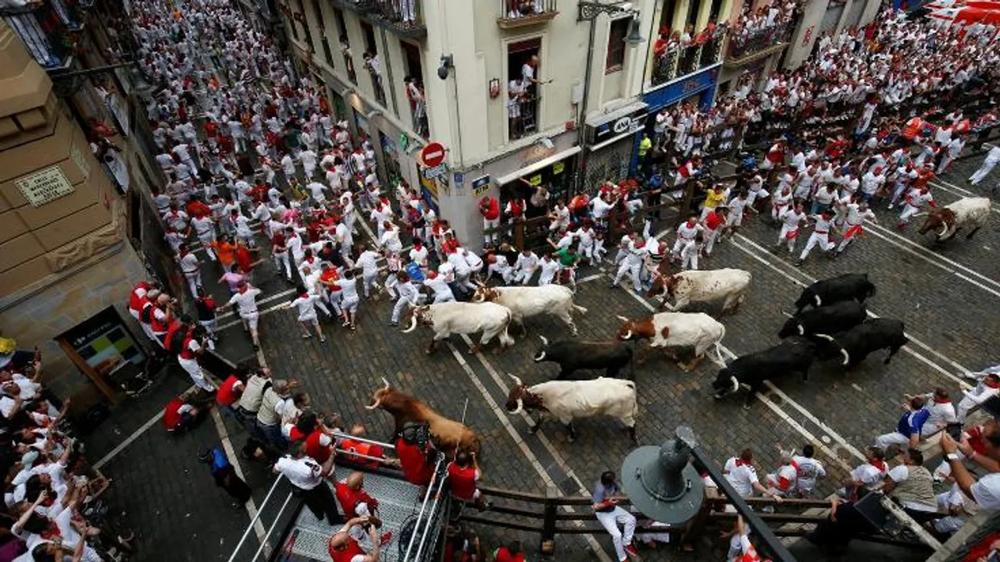

div
div
-
- İspanya Nerede?
- İspanya Avrupada bir ülkedir. Avrupanın güneybatısında İlber Yarım adasında bulunuyor. Doğusu ve güneyi Akdeniz ile çevrili durumda olan ülkenin, kuzeyde Atlantik Okyanusu'na kıyısı bulunuyor.

-
- İspanyada Nüfus
- Yaklaşık 46 milyonluk nüfusuyla İspanya, Avrupa'nın en kalabalık ülkelerinden biri konumunda. Canlı şehirleri, büyüleyici kasabaları ve cennet gibi köyleri, halkının kültürel çeşitliliğini ve dinamik ruhunu yansıtan etkinliklerle dolup taşıyor. Madrid'in hareketli sokaklarından Barselona'nın tarihi meydanlarına kadar, İspanya'nın şehir merkezleri hayatla dolup taşıyor
-
- Dil
- İspanya'nın resmi dili olan İspanyolca, ülkenin çeşitli bölgelerini ve halklarını birbirine bağlayan birleştirici bir güç görevi görmektedir. Kökleri Latince'ye dayanan İspanyolca, İspanya nüfusunun çoğunluğu tarafından konuşulmakta ve dünyanın en yaygın konuşulan dillerinden biri olarak kabul edilmektedir
-
- İspanya sokakları
- Cerdà, şehri ve sakinlerini dikkatlice inceledikten sonra, Eixample'ı eşit büyüklükteki bloklardan oluşan katı bir ızgara düzeninde inşa etmeyi önerdi Cerdà'ya göre bu detay, sokaklarda daha fazla hava sirkülasyonu, köşelerde daha iyi görüş sağlayacak ve tramvayların blokların köşelerini kolayca dönmesini sağlayacaktı. Ayrıca, her hanenin her gün yeterli doğal ışık almasını sağlamak için bloklar KB-GD yönünde konumlandırıldı.

-
- İspanya Boğa Güreşi Festivali
- İspanya için vazgeçilmez bir festivaldir. Her yıl ülkenin dört bir yanından gelen insanlar bu festivale katılır Aslında boğalar kırmızı rengi göremez. Onları sinirlendiren şey koşma ve bayrağın hareket etme eylemidir Boğalar bu kadar sinirliyken tabiki insanlara ve çevreye zarar verebiliyor. Bazı insanlar maalesef bu festivalde yaralanıyor.

Aşağıdaki linkten örnek videoyu izleyebilirsiniz.
Youtube
-
- İspanya Yemekleri
- Paella Valensiya. Valensiya dilinde "kızartma tavası" anlamına gelen paella, geniş ve sığ bir pişirme tavasında yapılan popüler bir İspanyol yemeğidir
-
İspanya'nın Yemeklerini Deneyimleyebilceğiniz Mükemmel Bir Yer
-
-
Piñata Cocktail Cantina
-
Barselona'da bulunan bu restrontta dilediğiniz yemekleri tadabilirsiniz.
işte gidebilceğiniz gün ve saatler
işte gidebilceğiniz gün ve saatler